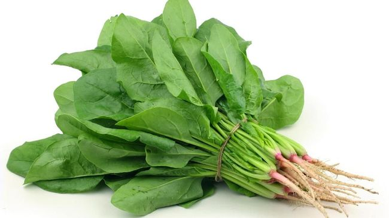

Sebelum membuat sayur bayam, pastikan semua bahan telah dipersiapkan dengan baik. Cuci bayam dengan air bersih dan pastikan bahan-bahan lainnya tersedia

Bahan-bahan
2 ikat bayam
4 butir bawang merah
3 siung bawang putih
100 ml air
1 sdt garam, sesuai selera
1 sdt kaldu bubuk, sesuai selera
1 SDM saos tiram
1/2 sdt lada bubuk
Cara membuat
1/2 sdt lada bubuk
Iris-iris bawang merah dan bawang putih. Kemudian tumis dengan sedikit minyak goreng hingga harum.
Kemudian masukkan bayam, beri air, garam, kaldu, saos tiram, dan lada bubuk. Masak sebentar saja lalu angkat dan sajikan.